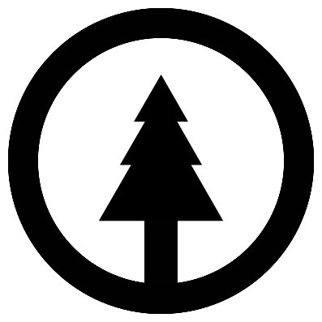

Darius J Chuck
Projects/work 2018+
This is a rough list of some of the projects and work I've been involved with.
It is ordered by category (professional, non-professional) and year (most recent first).
This list is not complete and may be updated in the future.
This list starts at 2018. There is also a long list of earlier projects.
Ongoing
λDNA and LAST

- Period: 2022 to present
- URL: https://xtao.org/last.html
- Description: Two extremely minimal programming languages I have created, which are both minimal versions of Alonzo Church’s lambda calculus, inspired by John Tromp’s Binary Lambda Calculus (BLC).
Jevko

- Period: 2021 to present
- URL: https://jevko.org
- Description: a versatile minimal syntax for encoding tree-structured information as human-friendly text.
TAO

- Period: 2020 to present
- URL: https://xtao.org
- Description: a label under which I publish content related to minimalism in computing – something I cultivate with passion.
Suspended
Webcomic experiments

- Period: 2023-10 to 2023-12
- URLs: https://djedr.github.io/haikomix/ | https://djedr.github.io/haker/
- Description: hand-drawn webcomics.
Concluded
Meditating on the Wizard Book and language design

- Period: 2023-02 to 2023-08
- URL: https://xtao.org/wizardlang.html
- Description: hand-translated all code from the Wizard Book into a semi-imaginary programming language based on Jevko.
Work at Standard Notes
- Period: 2021-02 to 2021-05
- Description:
- Summary: Back-end developer, encrypted note-taking app.
- Job title: Senior Software Engineer
- Roles: Back-end developer (TypeScript).
- Tasks: Auth back-end development, file server implementation, cryptographic library development, multifactor-authentication (TOTP) implementation, API design, bugfixing, code review
- Open-source: yes, GitHub profile
- Company type: small bootstrapped startup
- Team size: < 10
- Methodology: Custom Agile
- Programming disciplines: Object-Oriented, mixed
- Locations: 100% remote
- Time commitment: 24 h/week
- Technologies:
- Languages: TypeScript
- Frameworks and libraries: ExpressJS, superagent, TypeORM, InversifyJS, winston, otplib, ...
- Build tools: webpack
- Environments: Node.js, browser
- Clouds: Amazon Web Services
- Project management: Asana, Twist
- Code editors/IDEs: Visual Studio Code
- Data formats: JSON
- Other tools: Docker, GitHub, Git (+Gitflow), Datadog, ...
- Profilers: web browser built-ins
- Testing: Mocha/Chai, Jest, Istanbul
- Database systems: MySQL
- Operating system: Manjaro Linux
- Other: REST, JSON Web Token, nginx, DBeaver, docker-compose, Prettier, ESLint, DayJS, npm, yarn, semver...
Work at TomTom Germany
- Period: 2018-10 to 2019-12
- Description:
- Summary: Full stack development. Mainly back-end. Web applications for data processing and fusion. Internal tools for data visualisation (front-end, back-end, design, architecture).
- Job title: Software Engineer
- Roles: Back-end developer (Scala, Java), main front-end developer (TypeScript).
- Tasks: Development and maintenance of multiple web application back-ends; JSON REST API design and implementation; coordination with other teams, e.g. internal consumers of our APIs; documentation; design, development and optimization of a data-heavy front-end application...
- Team size: < 10
- Methodology: Scrum
- Programming disciplines: Functional, Object-Oriented
- Locations: Berlin, Germany; remote (~10 %)
- Technologies:
- Languages: Scala, Java, TypeScript, Python, HTML, CSS
- Frameworks and libraries: Akka (HTTP, Actors, Streams), Play, Guice, React 16+, Leaflet
- Build tools: Maven, ParcelJS
- Environments: JVM, browser, Node.js
- Clouds: Amazon Web Services, Azure
- Project management: Atlassian suite (Bitbucket, Confluence, JIRA)
- Code editors/IDEs: IntelliJ, Visual Studio Code
- Data formats: JSON, XML
- Other tools: Docker, Kubernetes, Terraform, Sonar, Jenkins, Git (+Gitflow)
- Profilers: VisualVM, honest-profiler, web browser built-ins
- Testing: TestNG, ScalaTest
- Database systems: PostgreSQL, SQLite
- Operating system: Linux (ArchLinux)
- Other: REST, JSON Schema, OpenAPI/Swagger, XML Schema